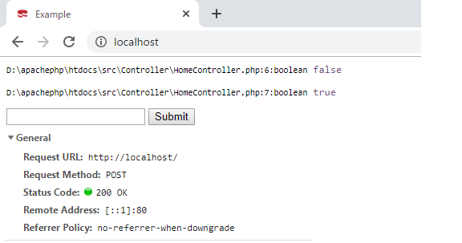

こんにちは。明月です。
この投稿はPHPのCakeフレームワークのRequestとResponseに関する説明です。
Requestとはウェブブラウザからウェブサーバに要請したデータ(headerとbody)です。Responseとはウェブサーバからウェブブラウザに応答するデータ(headerとbody)です。
要請するタイプには「GET」タイプと「POST」タイプがあります。そのことでGETのQuery Stringは「$_GET」から取得するしPOSTのForm dataは「$_POST」から取得することを説明したことがあります。
また、headerのデータは$_SERVERから取得することも説明しました。
link - [PHP] $_SERVER, $GLOBALS, $_GET, $_POST, $_REQUEST, $_COOKIE, $_SESSION, $_FILES, $_ENV(getenv())
以前、説明したデータをCakePHPフレームワークでももちろん使えます。でもデータ流れの構造を設計、管理するCakePHPフレームワークを使っているから内部オブジェクトでheaderデータを取得しましょう。
link - https://book.cakephp.org/3/ja/controllers/request-response.html
Request
ウェブブラウザからウェブサーバに接続する時の要請上です。ヘッダ情報や、セッション情報があります。
$this->getRequest()->getAttributes()と$this->getRequest()->getParam(キー)
getParamの関数の情報はgetAttributesの「params」のデータになっています。
<?php namespace App\Controller; class HomeController extends AppController { public function index() { // RequestのデータでgetAttributes関数の結果を表示する。 var_dump($this->getRequest()->getAttributes()); // RequestのデータでgetParam()関数の結果を表示する。 var_dump($this->getRequest()->getParam('controller')); } }
実はgetAttributes()関数はroutes.phpからControllerを呼出す時にデータを渡すパラメータです。
上の例の場合はcontroller、actionしかありませんが、connect関数にパラメータを付けるとgetAttributes()関数で取得ができます。
$this->getRequest()->getQuery()
このデータはHttpメソッドがGETの時に受取るQuery Stringの値です。
<?php namespace App\Controller; class HomeController extends AppController { public function index() { // Query string値を出力。 var_dump($this->getRequest()->getQuery()); } }
参考にgetQuery関数で初めのパラメータはキー名、２つ目のパラメータはデフォルト値です。
<?php namespace App\Controller; class HomeController extends AppController { public function index() { // Query StringデータをArrayタイプに取得 var_dump($this->getRequest()->getQuery()); // GET Stringデータをexampleキーで取得する。デフォルト値は「Nothing」だ。 $data = $this->getRequest()->getQuery("example", "Nothing"); var_dump($data); } }
$this->getRequest()->getData()
この関数はHttpメソッドがPOSTの時に受取るFormデータです。
使用方法はgetQueryと同じです。
<?php namespace App\Controller; class HomeController extends AppController { public function index() { // FormデータをArrayタイプに取得 var_dump($this->getRequest()->getData()); // Formデータをexampleキーで取得する。デフォルト値は「Nothing」だ。 $data = $this->getRequest()->getData("example", "Nothing"); var_dump($data); } }
$this->getRequest()->is()
この関数は要請メソッドタイプチェック関数です。つまり、is('post')の場合はPOSTはtrueを、そうじゃないならfalseを返却します。
探索可能なキーワードは「get」、「put」、「patch」、「post」、「delete」、「head」、「options」、「ajax」、「ssl」、「flash」、「requested」、「json」、「xml」があります。
<?php namespace App\Controller; class HomeController extends AppController { public function index() { // メソッドGETタイプをチェックする。 var_dump($this->getRequest()->is('get')); // メソッドPOSTタイプをチェックする。 var_dump($this->getRequest()->is('post')); } }
$this->getRequest()->session()
セッションデータを取得する関数です。
<?php namespace App\Controller; class HomeController extends AppController { public function index() { // セッションデータを取得する。 var_dump($this->getRequest()->session()); // セッションにTestキーでデータを格納する。 $this->getRequest()->session()->write("Test", "Example"); // セッションにTestキーでデータを取得する。 var_dump($this->getRequest()->session()->read("Test")); // セッションを初期化する。 $this->getRequest()->session()->clear(); // セッションにTestキーでデータを取得する。 var_dump($this->getRequest()->session()->read("Test")); } }
$this->request->getCookieParams()、$this->getRequest()->getCookie()
クッキーを取得する関数です。
<?php namespace App\Controller; class HomeController extends AppController { public function index() { // クッキーのデータを取得する。 var_dump($this->getRequest()->getCookieParams()); // クッキーのTESTキーで取得する。デフォルト値は「Nothing」だ。 var_dump($this->getRequest()->getCookie('TEST', 'Nothing')); } }
セッションキー値はCookieには見えないですね。クッキーの中でcsrfTokenキー見えますね。ページのセキュリティでToken設定するものですが、設定は複雑ですがそんなに有用なミドルウェアじゃないです。
Response
ウェブサーバからウェブブラウザに応答する情報です。基本的にcakePHPはヘッダからバディまで自動に作成してくれます。
別にユーザが修正する領域はないですが、エラーコード管理やブラウザにサーバ側のクッキー設定(Set-Cookie)をする時使います。
$this->getResponse()->withType() , $this->getResponse()->withStringBody()
withTypeはContext-Typeを設定します。
withStringBodyは応答のボディを設定します。
※PHPは基本的にポインタレファレンスがなくて、全て値レファレンスですね。$this->getResponse()で出るResponseの関数で格納や修正、設定すると返却は全てResponse値です。でも入力、返却値が違います。
<?php namespace App\Controller; class HomeController extends AppController { public function index() { // Responseオブジェクトを受取る。 $response = $this->getResponse(); // context-typeを設定する。 $response = $response->withType('application/json'); // bodyを設定する。 $response = $response->withStringBody(json_encode(['data' => 'hello world'])); return $response; } }
$this->getResponse()->withStatus(error code);
ブラウザ応答のエラーコードを設定します。
<?php namespace App\Controller; class HomeController extends AppController { public function index() { // Viewページを設定してResponseを取得する。 $response = $this->render("/Home/index"); // 応答コードを設定する。 $response = $response->withStatus(599); return $response; } }
$this->getResponse()->withCookie(cookie class);
サーバ側からクッキーを設定する。
参考:クッキーはブラウザに格納データですが、サーバから格納する時にはブラウザ応答する時にヘッダに「Set-Cookie」を入れてブラウザにクッキーが設定するようにします。
<?php namespace App\Controller; use Cake\Http\Cookie\Cookie; use Cake\I18n\Date; class HomeController extends AppController { public function index() { // クッキーを作る。 $cookie = new Cookie ( 'ExampleCookie', // クッキーキー 1, // 値 new \DateTime('+1 year'), // 満了時間 '/', // クッキーパス 'localhost', // クッキードメイン false, // secure only true // http only ); // Viewを設定してResponseオブジェクトを受取る。 $response = $this->render("/Home/index"); // クッキーを設定する。 $response = $response->withCookie($cookie); return $response; } }
その以外にRequestとResponseが提供する関数はもっと多いです。でも、よく使わないし、この投稿で全て説明するのは大変ですね。
link - https://book.cakephp.org/3/ja/controllers/request-response.html
ここまでPHPのCakeフレームワークのRequestとResponseに関する説明でした。
ご不明なところや間違いところがあればコメントしてください。
- [CakePHP] Errorページを設定する方法2020/02/20 03:00:00
- [CakePHP] Transactionを使う方法とEntityクラスを利用してInsert、Update、Deleteする方法2020/02/19 03:00:00
- [CakePHP] ORMのテーブルFetch設定2020/02/18 03:00:00
- [CakePHP] Cakeフレームワークでデータベースに接続する時に使うQuery式とEntityクラス、Tableクラス、ResultSet2020/02/17 08:16:23
- [CakePHP] データベース(MariaDB(Mysql))を接続する方法2020/02/14 03:00:00
- [PHP] namespaceとuse2020/02/13 03:00:00
- [CakePHP] RequestとResponseに関して2020/02/12 03:00:02
- [CakePHP] PHPのCakeからAjax要請がある時、jsonタイプ(json_encode関数)でResponseする方法とControllerでViewを選択する方法2020/02/08 03:00:00
- [CakePHP] MVCフレームワークのCakeをインストールする方法2020/02/07 03:00:02
- [PHP] 自動require及びincludeをする方法(spl_autoload_register)2020/02/05 03:00:00
- [PHP] 匿名関数(ラムダ式)とクロージャ(closure)2020/02/04 03:00:00
- [PHP] PHPのコーディング領域とデザイン領域を分離するテンプレートライブラリ Smarty2020/02/02 03:00:00
- [PHP] Reflection - Variable編2020/02/01 03:00:00
- [PHP] Reflection - Method編2020/01/31 03:00:00
- [C#] 46. データベース(MSSQL)に接続する方法2021/10/07 18:39:58
- [C#] 45. ネットワークソケット通信(Socket)を使い方2021/10/06 19:06:25
- [C#] 44. ファイル(FileInfo)とディレクトリ(DirectoryInfo)を扱い2021/10/05 19:29:34
- [C#] 43. ストリーム(Stream)とバイナリ(byte[])、エンコード(Encoding)、そしてusingを使い方とIDisposableインターフェース2021/10/04 18:33:04
- [C#] 42. ファイルを扱い(IO)とファイルメタデータ(FileInfo)を使い方2021/10/01 20:10:21
- [C#] 41. Taskクラスとasync、awaitを使い方2021/10/01 18:59:14
- [Javascript ] WebのFull calendar(スケジュールカレンダー)の使い方法2021/07/15 21:35:36
- [Java] 56. Web serviceのサーブレット(Servlet)で初期化作業(properties設定)2021/07/02 17:10:36
- [Java] 55. Spring frameworkに文字化けを解決する方法(Encoding設定)2021/06/30 16:37:16
- [Java] 54. Spring frameworkでWeb filterを使う方法2021/06/29 18:25:12
- [Java] 53. ウェブサービス(Web service)でエラーページを処理する方法2021/06/25 13:35:54
- [Design pattern] 1-3. ファクトリメソッドパターン(Factory method pattern)2021/06/23 19:45:37
- [Java] WebSocketでチャット履歴をローディングする方法2021/06/15 18:34:45
- [Java] WebSocketを利用してユーザ(サイト運用者)が他のユーザとチャットする方法2021/06/15 17:20:08
- [Design pattern] 1-2. ビルダーパターン(Builder pattern)2021/06/11 19:06:28